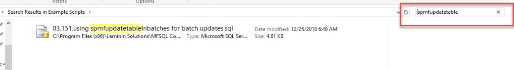
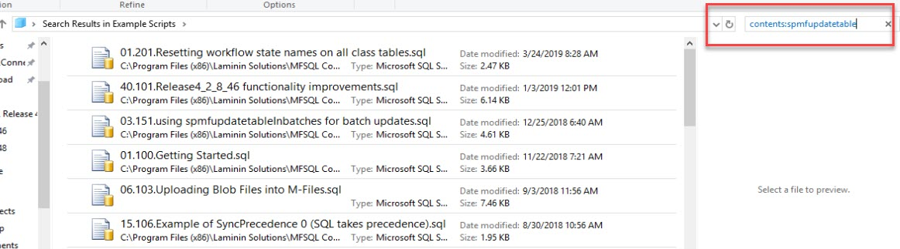

Getting to know MFSQL Connector¶
MFSQL Connector is installed, so now what?
Getting started could be overwhelming with the Connector’s wide range of capabilities and uses. This blog will guide you through the resources for specific use cases to get started. When you mastered the basics, you will discover more of the many capabilities that is installed with the product.
However, it is likely that you are using the Connector to solve a specific use case or problem. This guide aims at helping you on the way to know what you need to know.
Resources¶
The Connector includes a range of resources to fully use the all the capabilities and features.
Prerequisites: It presumes a basic understanding of SQL. MFSQL Connector enables a developer to use SQL to interact with M-Files. To improve your SQL skills you could resort to Udemy.com or many other training resources for basic and advanced SQL training. Google search for any SQL task is a good way to learn.
This guide: The MFSQL Connector guide is a rich source with information about the Connector and is constantly updated. Use the search to lookup any procedure or table or keyword, or follow the pages which is organised in a logical structure to guide you through specific focus areas. The guide includes technical documentation; general guidelines and a series of blogs or practical guides on different topics.
Your feedback on the guide will be appreciated.
The blogs: The guide includes a series of blogs prepared over time to highlight different aspects of the use of MFSQL Connector Contact us if you would like to have a blog about a specific topic.
The examples: Examples of usage of the procedures and capabilities can be found in this guide and in a series of SQL scripts. These scripts are located in the installation folder for the package in the examples scripts folder: C:\Program Files (x86)\Laminin Solutions\MFSQL Connector Release 4\yourDatabaseName\Example Scripts. A good way to navigate through these is to access them directly from SSMS (Open file in SSMS) and to use the search on keywords or a procedure name to get scripts that relates to the keyword or procedure.
To search on the title of the examples: type the keyword in the search in explorer

To search the content of the files: type the prefix ‘contents: ‘ and then the keyword in the search in explorer

Videos: There is a growing number of training and overview videos in our youtube channel
Advanced topics procedures and examples¶
Get vault settings : FnMFVaultSettings : 01.101.Updating settings
Change Settings : spMFSettingsForVaultUpdate, spMFSettingsForDBUpdate : 01.101.Updating settings
Vault settings related tables : MFVaultSettings, MFProtocolType, MFAuthenticationType : 01.101.Updating settings
Metadata structure related tables MFValuelist , MFValuelistItems, MFProperty , MFClassProperty, MFClass, MFWorkflow , MFWorkflowState : 01.100.Getting Started, 01.105.MetadataStructureChanges
Changing the lookup type : spMFClassTableColumns : 15.109.Explorer impact of multi lookup property changes
Split Paired string, Split string, Replace special characters, Capitalize first letter : fnMFSplit, fnMFSplitPairedStrings, fnMFSplitString, fnMFCapitalizeFirstLetter : 16.101.Using functions in custom procs
Advanced class table stats : spMFClassTableStats, ##spMFClassTableStats : 01.105.MetadataStructureChanges
Class Table column error : spMFClassTableColumns, ##spMFClassTableColumns : 15.108.Analyse Class table columns
Update record by record : spMFUpdateItemByItem : 03.200.using record by record update
Managing deletions in M-Files : spMFUpdateTable : 01.131 Example of Deleting duplicate objects in MFiles
Create all class tables : spMFCreateAllMFTables : 01.103.InitialiseApp, 01.110.working with ALL metadata update procs
Drop all class tables : spMFCreateAllMFTables : 01.103.InitialiseApp, 01.105.MetadataStructureChanges, 01.110.working with ALL metadata update procs
Update all class tables : spMFUpdateAllncludedInAppTables : 01.103.InitialiseApp, 01.110.working with ALL metadata update procs
using custom table and column names : spMFCreateTable, spMFDropAndUpdateMetadata : 01.105.MetadataStructureChanges
Create multiple class tables & update tables : spMFCreateTable, spMFUpdateTable, fnMFParseDelimitedString : 01.102.QuickStartup for multiple class tables
Tracking processing : MFUpdateHistory, MFAuditHistory, MFProcessBatchDetail, MFProcessBatch : 02.115.using updatetable filters - Objid, 05.100.understanding updatehistory logging tables
Processing performance report : MFProcessBatch, MFProcessBatchDetail : 20.101.Processing PerformanceAnalysis
Manage logging : MFUpdateHistory, spMFUpdateHistoryShow, spMFClassTableStats, spMFLogTableStats : 01.132.Deleting objects in M-Files, 02.115.using updatetable filters Objid, 05.100.Delete history logging tables, 15.101.Using user messaging
Managing logging tables : spMFDeleteHistory : 05.100.understanding uhistory tables
Using user messages : MFUserMessages, MFProcessBatch, spMFInsertUserMessage, spMFProcessBatch_EMail, spMFResultMessageForUI : 15.101.Using user messaging